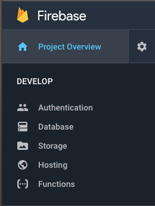
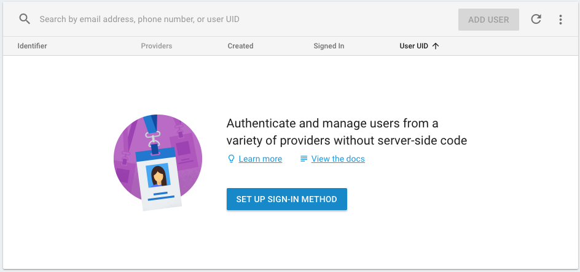
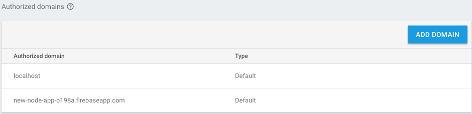
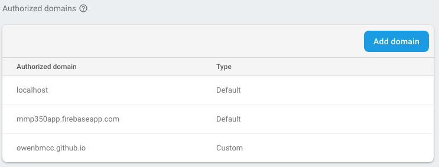
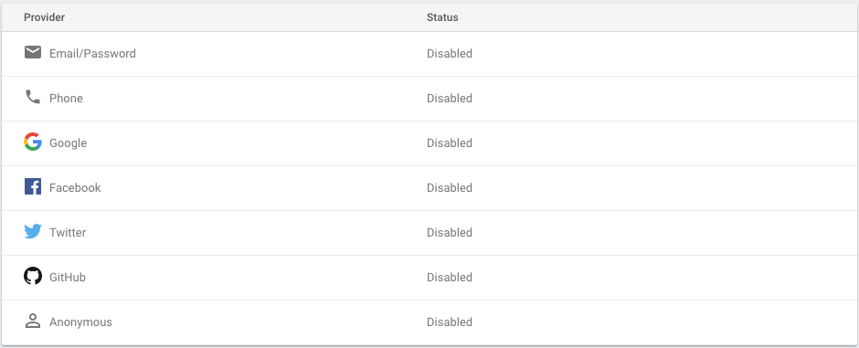

Firebase can handle authentication on the client side, which relieves us from a lot of work implementing authentication on the back end.
In the Firebase console, let's set up some authentication.
Click on the Authentication item under Develop.
This is where we will manage users of our application.
This interface allows us to create multiple types of authentication and manage users.
We can also set the domains that will be allowed to interact with our app.
 localhost is for working on the app on your computer, this is the server location created by a local server.
For Firebase to work with our deployed apps, we need to add the GitHub Pages domain.
We're going to start by adding email provider. This is a simple authentication method. We will ignore the other methods but feel free to try adding them if you like.
We need some text inputs and a button for the user to submit their info. We're not using a <form> here because this is all client side.
When the user click the button, we need to capture their name, email and password and create a new user.
We'll start with a simple sign up and then work on creating the user.
First we need to create a new file in the js/ folder to handle authentication. Let's call in auth.js.
We need to attach it to the index.html file with a script tag.
<script src="js/auth.js"></script>Then get references to our HTML inputs and buttons so we can create events and get the user input in each field.
To create a user, add an event to the sign up button and then get the email and password and use Firebases's createUserWithEmailAndPassword method.
That will add a user to the authentication table. Give that a try and then refresh the authentication table in the Firebase console to see if a user is added.
Once that works, there's some more work we need to to create the user in the database.
We're going to modify the above code, starting by creating a Promise from the result of the createUserWithEmailAndPassword method.
In JavaScript, a Promise represents the eventual outcome of a asynchronous function. This could be either the completion of the function or a failure.
Using a Promise allows the developer to wait for either outcome and then write code to behave according to that outcome.
When creating a new user, either the user will be created, or we will receive some kind of error. If a user is created, we will want to store that user in the database.
The promise will return a user credential with some information we can use to store that user in our database.
.then fires when the function completes and calls the updateUser function
In the future, we will modify this function to add the user to out database.
.catch will return an error. If there is an error we can display it to the user.
For now, an alert will do, but in the future we could build this into the HTML page.
Test the error code by trying to create a user with a password like 0 or no email.
So once a user logs out, they need to log in.
This looks similar to the code for creating a new user but simpler.
To keep users logged in, Firebase stores a user key in the local storage in the browser. This means if you refresh the page, or close your browser and return later, you will still be logged in.
In order to detect this we can use another Firebase Authentication function.
onAuthChanged will fire anytime a user logs in or logs out, even when the page is reloaded.
Now that we have a user, let's display the user name. We can also throw the log out button in here.
We're going to use this to display the user name, but we'll also do a little trick with CSS to change our layout.
First we'll add the #user-info into .logged-in class for the body element to show and hide the sections we need.
Now that we have a user, that user will be logged in, so let's add a function to let them log out.
Okay, that was a lot of work, but now we can login in our users.
By verifying users, we can use there user ID to set up a database that stores information specific to each user, and restrict access to different parts of the site based on authentication.